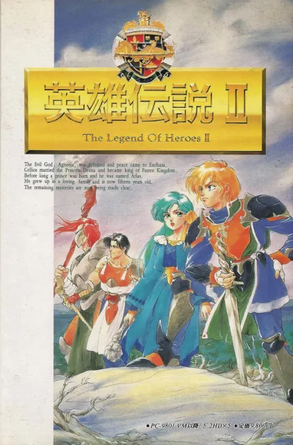

정식 명칭은 '드래곤 슬레이어 영웅전설 Ⅱ'이다. 타이틀 로고를 보면 드래곤 슬레이어 시리즈임을 강조하던 전작과 달리 이번 작품은 영웅전설 시리즈임을 강조하고 있는 것이 특징. 키야 요시오가 디렉터로 참여하고 있긴 하지만, 프로그래머로써는 참여하지 않았기에 드래곤 슬레이어 시리즈로 분류하지 않으려는 이도 있다. 하지만 타이틀 명에 여전히 드래곤 슬레이어 라는 명칭이 들어가 있다는 점, 키야 요시오가 프로그래머로 참여한 전작의 시스템을 계승하고 있다는 점, 드래곤 슬레이어 컴플리트에 영웅전설 2가 포함되어 있는 점 등을 통해 드래곤 슬레이어 시리즈에 속해있다고 보는 것이 맞다. 물론 이는 드래곤 슬레이어 7이 아니라, 드래곤 슬레이어 6의 파트2에 해당한다는 의미이다.
